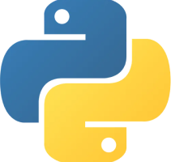

Python
Programming & Machine Learning
Python is my primary programming language for data science, machine learning, and application development. I use it extensively for data preprocessing, model building, and experimentation with machine learning and deep learning frameworks. Its rich ecosystem of libraries enables me to efficiently develop, evaluate, and deploy data-driven solutions.